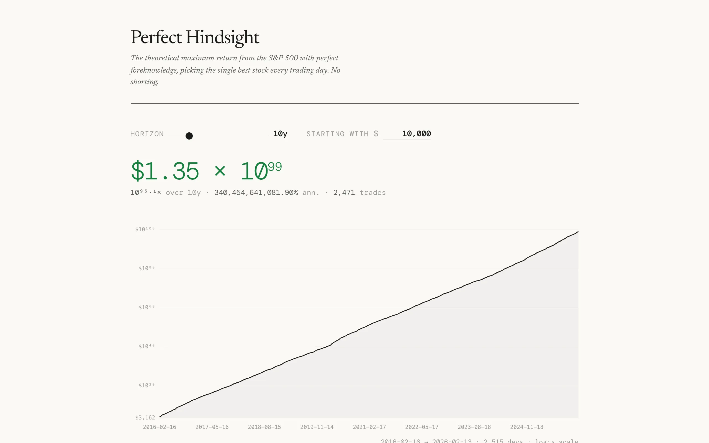

Everyone knows the stock market goes up over time. Buy an index fund, hold it for 30 years, retire comfortably. But that raises an obvious hypothetical: what if you had perfect information? Not just "buy and hold the index" but "buy exactly the single best-performing stock every trading day." No shorting, no options, no leverage. Just one stock per day, always the right one. How much money could you make?

{kind=link}
The answer is absurd. Over long horizons, the numbers leave the realm of meaningful currency and enter scientific notation. A dollar invested with perfect daily foresight over a few decades becomes trillions, then numbers that exceed the GDP of Earth, then numbers that are just amusing to look at. The point isn't that this is achievable. The point is that it puts a hard upper bound on what any trading strategy could possibly return, and it shows how much of the market's potential is locked behind information you can't have.
How it works
The calculation is simple in principle. For each trading day, look at every stock in the S&P 500, find the one with the highest daily return, and assume you held it. Multiply all those daily returns together across the chosen time horizon and you get the cumulative return. The constraint is long-only: no shorting, so on days when every stock drops, you still pick the least-bad one.
The interactive tool lets you adjust the time horizon and starting investment. A slider controls how many years of data to include, and a currency input sets the initial amount. The main display shows the final portfolio value, the overall return multiple, the annualized return percentage, and the total number of trades. These update in real time as you move the slider.

{kind=link}
The visualization
A line chart plots the cumulative portfolio value on a log scale over time. Log scale is necessary because the numbers span so many orders of magnitude that a linear chart would be a flat line at zero for most of the plot and then a vertical spike at the end. Hovering over the chart shows the specific trade for that day: the date, the dollar amount, which stock was selected, and its daily return.
Below the chart, a summary table shows every available time horizon with its total return, annualized return, final value, and trade count. Clicking a row in the table updates the chart to show that specific period. A horizontal bar chart breaks down which stocks were held most frequently and how much they contributed to the total return. Some names show up more than you'd expect. Volatile stocks dominate because a stock that regularly swings 10% in a day will be the best performer on a lot of those up days.
Survivorship bias
One subtlety worth mentioning: the S&P 500's composition changes over time. Companies get added and removed. A naive approach would use today's index members and look up their historical prices, but that introduces survivorship bias because it excludes companies that were in the index historically but later got removed (often because they performed poorly). The tool notes in its footer whether survivorship bias has been accounted for, along with the reference dates and stock counts used in the calculation.